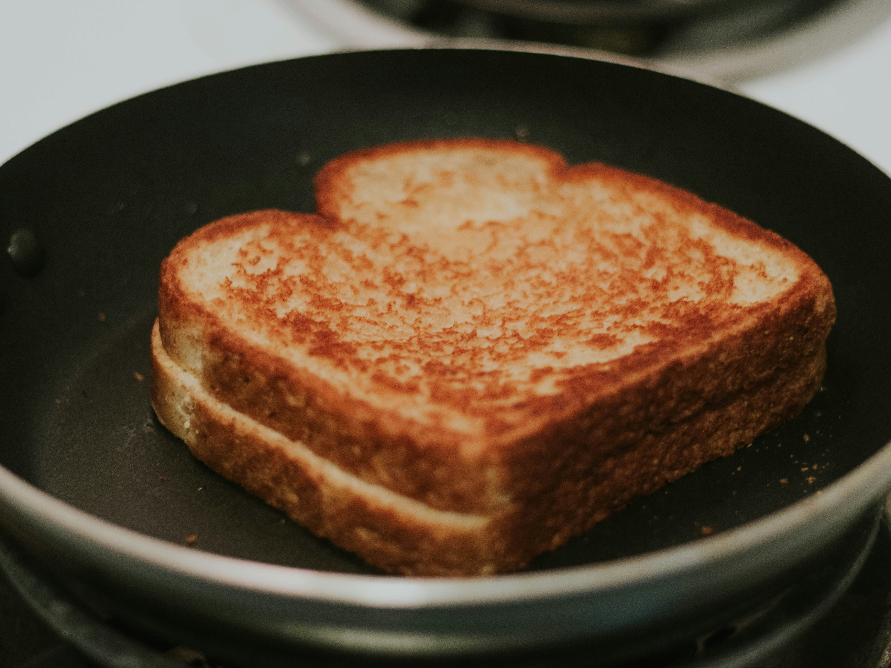

I have a particular appreciation for grilled cheese sandwiches, in part because they occupy a comfortable middle ground between actually cooking something and simply assembling ingredients. You can spend a considerable amount of time deliberating over which combination of artisanal cheeses and freshly baked breads will produce the optimal sandwich, or you can use whatever happens to be in your refrigerator. Both are perfectly legitimate approaches to the preparation of what is, fundamentally, hot cheese between two pieces of bread.
The most important consideration when making a grilled cheese sandwich is temperature. You want to give the cheese sufficient time to melt without incinerating the bread in the process. Cooking over medium-low heat requires a modicum of patience, but the results are generally worth the additional two or three minutes of your life. I recommend serving the sandwich with tomato soup, particularly if you want to give the impression that you've prepared an actual meal.